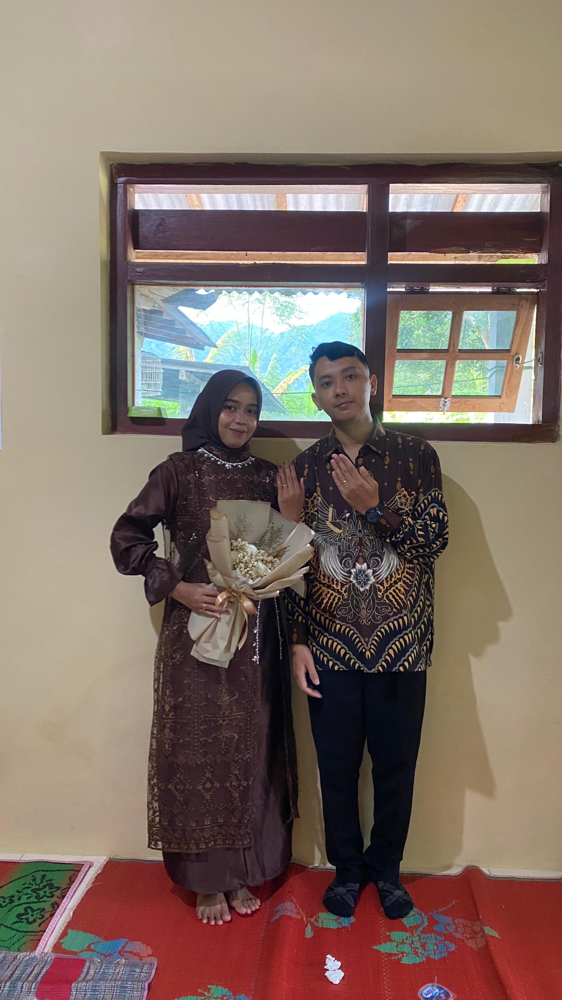
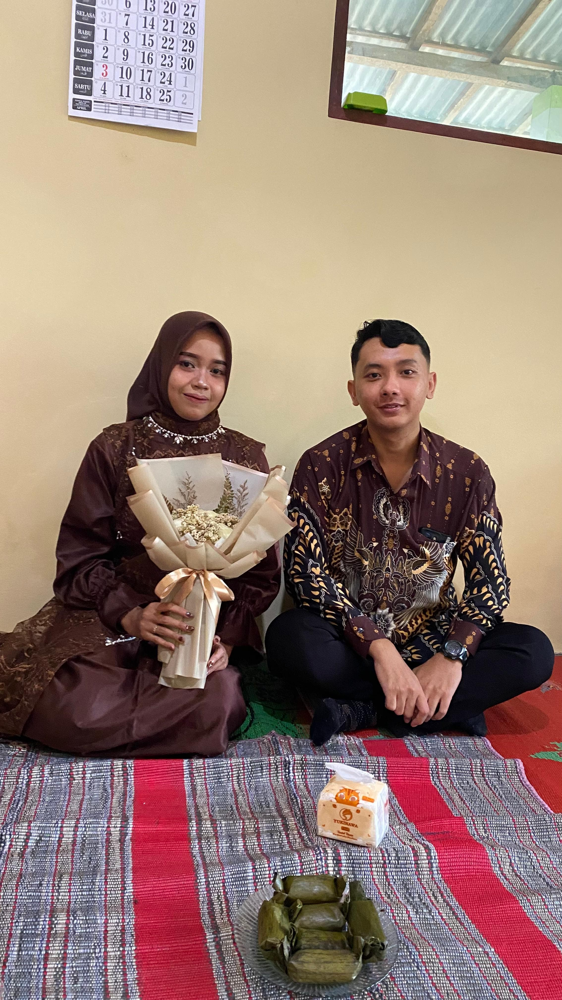
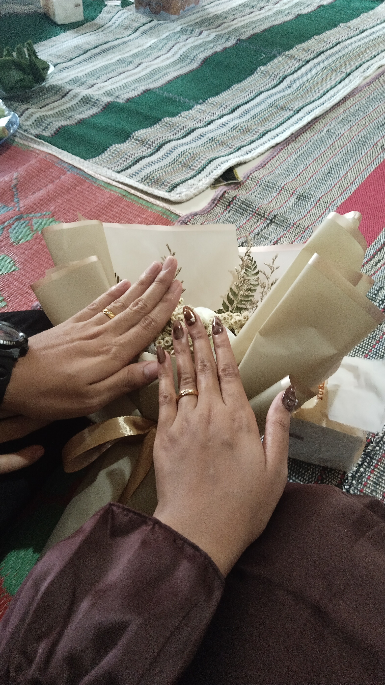
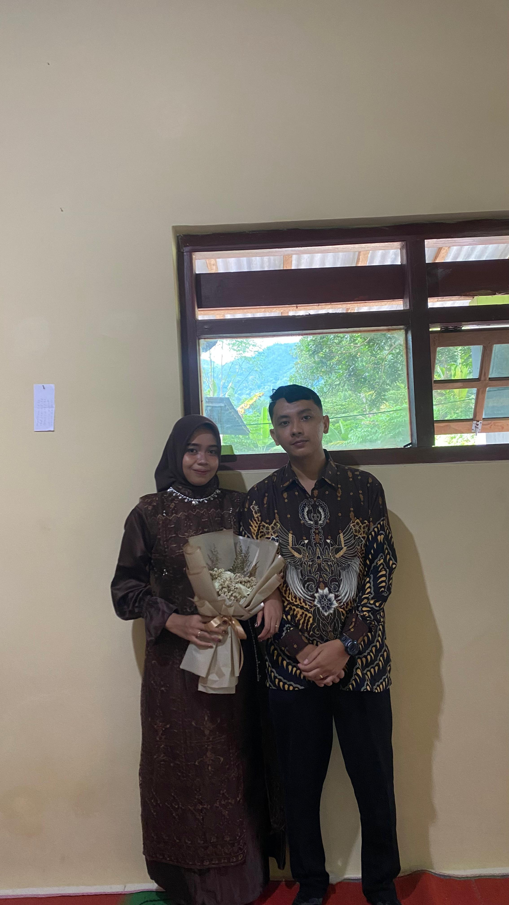

Rega & Safa
29 JULI 2026
The Wedding of
Rega & Safa
بِسْمِ اللَّهِ الرَّحْمَنِ الرَّحِيمِ
Assalamu’alaikum Warahmatullahi Wabarakatuh
Dengan memohon rahmat dan ridho Allah SWT, kami bermaksud mengundang Bapak/Ibu/Saudara/i untuk menghadiri momen istiadat penyatuan cinta kami:
"Dan di antara tanda-tanda (kebesaran)-Nya ialah Dia menciptakan pasangan-pasangan untukmu dari jenismu sendiri, agar kamu cenderung dan merasa tenteram kepadanya, dan Dia menjadikan di antaramu rasa kasih dan sayang. Sesungguhnya pada yang demikian itu benar-benar terdapat tanda-tanda bagi kaum yang berpikir."
(QS. Ar-Rum: 21)
Rega
Rega Aji Prayogo
Putra Pertama dari Pasangan:
Bapak [Nama Ayah Pria] & Ibu [Nama Ibu Pria]
Trenggalek, Jawa Timur

Safa
Safa Tri Asriani
Putri Ketiga dari Pasangan:
Bapak [Nama Ayah Wanita] & Ibu [Nama Ibu Wanita]
Alamat Safa
Save The Date
Rabu
29
Juli 2026
09:00 WIB - Selesai
Kediaman Mempelai Wanita
Trenggalek, Jawa Timur
Our Moments


Konfirmasi Kehadiran
Mohon konfirmasi kehadiran Bapak/Ibu untuk memudahkan persiapan kami.
ISI FORM KEHADIRAN (RSVP)Wedding Gift
Doa restu Anda adalah kado terindah bagi kami.
Anda dapat memberikan tanda kasih melalui:

1234-567-89012
A.N REGA AJI PRAYOGO
0812-3456-7890
A.N REGA AJI PRAYOGO